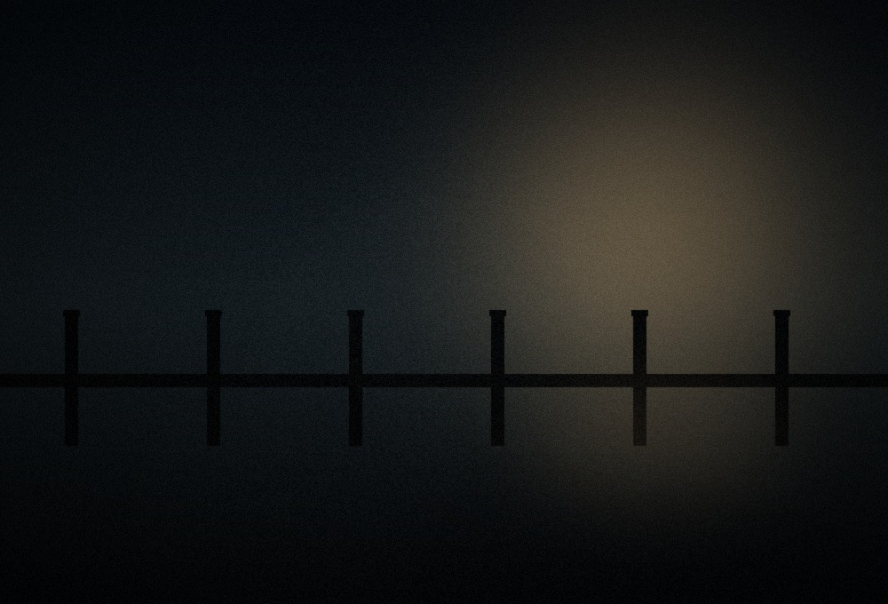

Sinopsis

Después de diez años sin hablar, un pescador veteranoo y si hija se ven obligados a compartir la misma embarcación cuando una tormenta los deja varados a la deriva, lejos de la costa y de cualquier señal de auxilio.
A medida que los días pasan y los recuerdos escasean, ambos deberán enfrentar las razones que los distanciaron, mientras el mar impone sus propias reglas
Ficha ténica
- Dirección
- Mariana Solórzano
- Guion
- Mariana Solórzano, Emiliano Brizuela
- Música
- Renata Kowalski
- Fotografía
- Hugo Ferretti
- Duración
- 118 minutos
- Año
- 2026
Crítica
Altama fue destacada por su dirección de fotografía y por el trabajo actoral de su reparto princiapl, que sostiene gran parte del peso dramático de la historia en espacios reducidos.
La crítica especilizada resaltó el uso del sonido ambiental y del silencio como recursos narrativos en la producción que privilegia la tensión contenida sobre el espectáculo visual